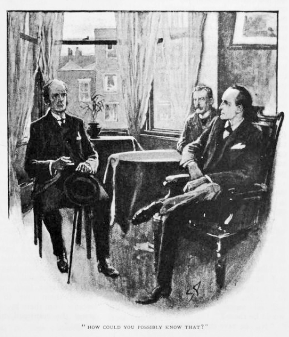
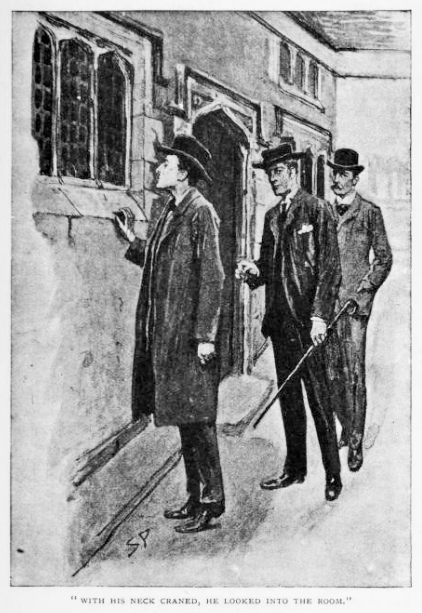
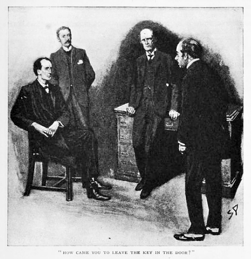
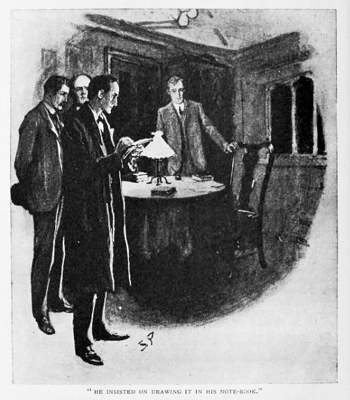
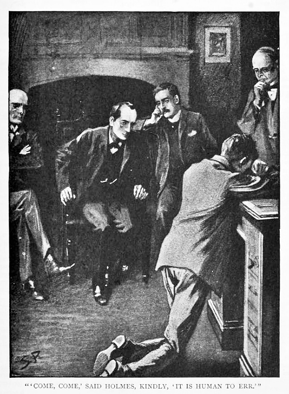
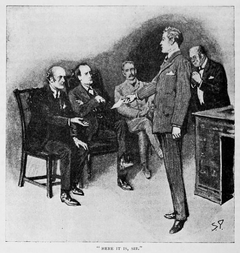

あれは九五年のこと、ここで触れるまでもない諸々の事情から、シャーロック・ホームズくんと私は、この国随一の大学町で数週間を過ごすこととなったのだが、その折に見舞われたのが、今よりお話するささやかながらも深い事件なのである。もっとも詳しく書いて読者諸賢にその大学や犯人を特定させようものなら、盲動俗悪の謗りを受けよう。かように痛ましい不始末は忘れるままがよいのではあるが、しかるべき配慮さえあれば、この一件を著してもよかろうと思われる。何よりわが友人の辣腕の一端を知らしめる一助となるのであるから。ただ記すにあたり、この件を特定の場所へ結びつけたり、関係者への手がかりを与えたりすることのないよう心がけるものである。
当時我々が身を寄せていたのは図書館近くの家具つき下宿で、シャーロック・ホームズは初期イングランドの勅許状について念入りに調べ上げていたところだった――その成果は見事なものであるからいずれお話することがあるかもしれない。ともかくもここである夕べ、我々はある知人の訪問を受けた。ヒルトン・ソウムズ氏は
「ぜひとも、ホームズ先生、貴重なお時間を少々割いていただきます。聖ルークは大弱りの事件に見舞われ、まさに僥倖、あなたがこの町にいらっしゃらなければ、どうすべきか今頃途方に暮れておりました。」
「僕は目下大忙しで、邪魔はご勘弁を。」と友人が答える。「警察を呼ばれた方がよかろうと存じます。」
「いやいやよろしいですか。そのような対応はどだい無理。いったん警察沙汰になればもう収まりつきません。この件ばかりは学寮の名誉のため、騒ぎになるのをどうしても避けねば。ご配慮いただけるのはその手腕同様つとに有名、助けとなるのはあなたばかり。お願いです、ホームズ先生、どうかお力を。」
友人の機嫌は勝手知ったるベイカー街の環境から離れて向こうよくなることはなく、切抜帳も実験器具もいつもの散らかり具合もないとあっては、とっつきにくい相手とならざるをえない。しぶしぶといったふうに肩をそびやかすと、客人は早口でそわそわ身振り手振りを交えて、話を一挙に語り出す。
「前置きとしては、ホームズ先生、明日はフォーテスキュー奨学金の試験初日で、わたくしも試験官のはしくれ。担当はギリシア語で、問題冒頭に受験生の見知らぬ長文のギリシア語翻訳を課しておりまして。試験問題に刷られた箇所が割れれば、当然受験生は前もって対策できますから、大いに利がございます。ですから細心の注意を払って問題を伏せるわけで。
本日三時頃、問題の校正刷りが印刷屋から届きまして。課題としてはトゥキュディデスから半章を抜粋、本文の誤字はゼロか丹念に読み返さねばなりません。四時半、作業はいまだ終わらずじまい、けれども知人の部屋でお茶の約束がございましたから、机の上に校正刷りをおいて部屋を空けまして。一時間と少しの不在です。
ご存じでしょうが、ホームズ先生、わが学寮の戸は二重――部屋の内側が緑のベーズ付きで、表向きが楢のものになっております。わたくしが表扉に近づくと、驚いたのなんの、鍵が挿さったままで、ふとわたくしのうっかりかと思ったものの、懐探るとちゃんとある。と残る合い鍵は知る限り使用人のバニスタが持つものだけ――この男はわたくしの部屋の世話をして一〇年、真面目なること疑いの余地もございませんが、見てみると確かに鍵は彼のもの、お茶がいるかと部屋へ顔を出し、帰るときにうっかり取り忘れたのかと。挿したままでも他の折なら問題もさほどないでしょうが、この日ばかりは最悪の事態になってしまうわけで。
机に目をやったとたん、はっとしました。何者かが問題をひっかき回したのですよ。校正刷りは縦長で三枚、すべてまとめてあったというに、見ると一枚は床の上に落ち、もう一枚は窓際の小机の上、三枚目は置いておいたところにそのまま。」
ここで初めてホームズが口を挟む。
「一頁目が床上、二頁目が窓際、三頁目がそのまま。」

「そうですともホームズ先生、どうしてご存じで？」
「どうかその興味深いお話の続きを。」
「すぐ思いついたのは、あろうことかバニスタが問題を勝手に見てしまったのではということで。とはいえ当人は真面目な顔で否定致しますし、わたくしとて嘘でないと心底より思い。となると残るは、通りすがりの何者かが戸に挿しっぱなしの鍵を認め、わたくしが不在と知るや忍び込んで問題をのぞいたことに。大金がかかっております。奨学金はたいへん高額、不届者なら学友を出し抜こうと危険を冒してもおかしくありません。
バニスタはこの件で気がすっかり動転、問題の荒らされた疑い濃厚とわかるや卒倒寸前。ブランデイを一口やり、椅子で休ませ、その間わたくし部屋をくまなく調べてみました。すぐ気づいたのは、侵入者が紙の皺の他にも存在の痕跡を残していることで。窓際の小机には鉛筆の削り滓がちらほら、同じくそこに折れた芯の先がころん。どう見ても悪たれが大慌てで問題を写していて鉛筆が折れたがため、なんとか尖らせようとしたということで。」
「お見事！」とホームズは機嫌を取り戻し、事件のことが気になりだした様子。「運は君に味方している。」
「こればかりではなく。わたくし、いい赤革張りの書き物机を新調しまして、誓って申し上げて、バニスタも請け合いましょうが、ずっと毛羽も汚れもございません。だのに今見ると三インチほどの真新しい傷が――ただの傷でなく間違いなく切られたものですよ。それどころか卓上に黒い塊、小さな泥玉があって、そこに
「喜んで調査の上、できる限りのご助言を差し上げましょう。」とホームズは立ち上がり、外套を羽織る。「この事件、まったく面白味がないわけでもない。問題の届いたのち、どなたかお部屋へお訪ねに？」
「ええ、ダウラト・ラースという青年が。同じ棟に住まうインド人の学生で、試験について細々と質問を。」
「部屋には立ち入らせた？」
「ええ。」
「すると机の上に問題が？」
「丸めてあったと、記憶を。」
「ただ校正刷りと悟られたおそれも。」
「ことによると。」
「他に部屋へ誰か？」
「いえ誰も。」
「どなたか校正刷りがそこにあると知っていた人物は？」
「印刷屋以外誰も。」
「ではバニスタなる人物も知らない？」
「ええ、それこそ誰も。」
「当人はいまどこに。」
「具合を悪くして、かわいそうに、椅子に休ませたまま出てきたので。大急ぎで参ったものですから。」
「戸を開けたまま？」
「問題は真っ先にしまいましたよ。」
「そうしてここに至る。ソウムズさん、インド人学生がその巻紙を校正刷りと気づかなかったとすれば、手を出した男はそこにあると知らず、たまたま来たことになります。」
「そうなりますね。」
ホームズはなぜかここで微笑む。
「さて参りましょう。君好みではないね、ワトソン――物でなく心の問題だ。よろしい、来るかは任せる。ではソウムズさん――案内の方を！」
依頼人の居間についた細長い格子窓が、玄関とともにこの歴史ある学寮の苔むす

「そやつはこっちの戸から立ち入ったに違いありません。窓ひとつある以外、入口はございませんし。」と案内していた講師が言う。
「なんと！」とホームズは妙な笑みを浮かべて、依頼人に流し目を送る。「ふむ、ここで得られるものがないなら、なかへ入るが賢明か。」
講師は表扉の鍵を外し、我々をなかへと招き入れる。我々は部屋の入口で立ち止まり、そのあいだホームズが絨毯を調べ始める。
「おそらくここには何もないでしょう。」と友人。「かくも日差しが強くては、何も期待できない。使用人もすっかり気を取り戻したようで。お話では椅子に休ませたとのことですが、どの椅子で？」
「窓際のそれです。」
「なるほど。この小机のそば。もう入っても結構。この小机から始めましょう。もちろん事の次第は実に明らか。男が忍び込み、中央の机から紙を一枚ずつ手に取った。そしてこの窓際の机まで持ってきた。ここからなら、あなたが中庭をやってきてもわかる上、逃げおおせもする。」
「ただ実際はそうでなく。」とソウムズ。「わたくしが入ってきたのは勝手口でして。」
「うむ、結構！ だがとにかくその者の念頭にはあった。当の三枚を見せていただきたい。指紋はなし――なしか！ ふむ、この一枚をまず持っていき、写した。手にとってやりおえるまでの時間は、あらゆる縮約形を用いたとして……少なくとも一五分。そのあと放り落として次をつかむ。そのさなかにあなたが戻ってきたため大慌てで逃げ出した――大慌てで。問題を元に戻すひまもなく、それで誰かがいたとあなたに知られるわけですが、裏から建物に入るとき、玄関の石段を駆け降りる足音には気づかず？」
「そう、ですね。」
「ふむ。その者はあらん限りの力で書いたため鉛筆を折り、あなたの考え通り、再度尖らせる羽目になった。この点は興味深いね、ワトソン。その鉛筆はありふれたものではなかった。よくある寸法よりも大きく、芯は柔らかく、表面の色は紺、製造者の名は銀の刻印で、残りは一インチ半ほどしかない。このような鉛筆を探すのです、ソウムズさん、さすれば目的の者は捕らえられます。一言付け加えると、その者はひどくなまくらな小振りの刃物を持っています。ご参考まで。」
ソウムズ氏は一挙に多くのことを知らされ、いくぶん気圧されてしまっていた。「まあ、あらかたついてはゆけますが、正直、長さの件だけは――」
と、ここでホームズの差し出したる小さな木切れ。ＮＮという文字のあと、木片には何も刻まれていない空白があった。
「どうです？」
「とおっしゃられましても――」
「ワトソン、君に対する今までの扱いは間違っていた。他にもいたのだな。さてこのＮＮは何がありえるか。単語の末尾ではある。ご存じ、ヨハン・ファーバーは最も知られた製造者の名だ。では明らかではないか。通常そのヨハンという文字のあとに続く分だけの鉛筆しか残っていないのだと。」と友人は小机を電灯の前へ持ってくる。「書き付けた紙が薄かったのなら、きっと何らかの跡なりがこの研磨面にできるはず。なし、何もなしだ。これ以上得るものはないと見える。さて中央の机だ。この小さな塊が、見たところ君の話した黒い泥玉と。形はどこか角錐のようであり、なかは空洞らしく、おっしゃった通り大鋸屑が混じっているようで。なんと、いとおもしろきもの。そしてこの傷――きっと裂かれたものだ。入りは浅く、抜けがぎざぎざの穴に。ありがとう、ソウムズさん、おかげさまでこの事件に目を向けることができました。ところでその扉の先には何が？」
「わたくしの寝室が。」
「事件以後立ち入ったりは？」
「いえ、まっすぐあなたの元へ。」
「ひとつ見て回りたく。なんと古風で素敵な部屋！ しばしお待ちいただけると幸い、床を調べ終わるまで。なし、何もなし。その窓掛けはどうか。裏に衣服がかけてあるとして、何者かがこの部屋に潜まざるをえないなら、そこしかない。なにぶん寝台は低すぎ衣装戸棚は狭すぎる。誰もいないとは限らないわけだが！」
ホームズが窓掛けを引く瞬間、私は息をのむ。その仕草には緊張感があり、万一に備えているとわかったからだ。実際には、引かれた窓掛けが何をあらわにするでもなく、並んだ掛け釘から三、四着の上下がぶら下がっているだけ。そしてホームズは立ち去る途中で、ふと床に身をかがめる。
「ほお！ これは何だ。」と友人。
それは小さな黒い泥の塊、書斎の机にあったものとそっくりであった。ホームズは手のひらに載せ、電灯の光にかざす。
「侵入者は居間ばかりか寝室にも跡を残していったようです、ソウムズさん。」
「何のためにそんなところへ。」
「それは至極明らかかと。あなたが予想外のところから戻ってきたため、部屋の扉前まで気づかなかった。できたことは？ 足の着くものをみなひっつかみ、寝室に駆け込んで身を隠すことです。」
「そんな、ホームズ先生、ではこうおっしゃると。わたくしがバニスタとこの部屋でしゃべっているあいだずっと、そやつは気づきさえすれば捕まえられるところにいたと。」
「そう踏んでいます。」
「こ、こんなふうにも考えられますよ、ホームズ先生。寝室の窓をご覧になったかどうかはわかりませんが……」
「鉛製の格子窓で硝子入り。三つ並んで蝶番で動くものがひとつ、人ひとりなら何とかなる大きさでした。」
「その通りで。面しているのは中庭の奥なのでよくは見えません。そやつはそこから忍び込み、寝室を通り抜けたから跡が残ったのであって、最後に開け放しの扉から出たとも……」
我慢できずにホームズが首を振る。
「現実的に考えましょう。確かこうおっしゃった。この玄関を使う学生は三人いると。普段からあなたの部屋の扉の前を通るのですね？」
「ええ、そうですね。」
「そして全員、この試験を受ける？」
「ええ。」
「そのうちひとりを、特別に疑ってみることは？」
ソウムズは戸惑っていた。
「たいへん微妙な問題で。ふつう証拠もないのに人を怪しみたくなどないでしょう。」
「まずはその怪しいと思うことを。証拠の方は僕の仕事です。」
「でしたら手短にお話を。この棟に住む三人の人となりですが、一番下にいるのがギルクリスト、彼は文武両道、大学ではラグビー部とクリケット部に入っており、障害物走や走り幅跳びでは対抗戦の代表です。健やかで逞しく、父親が悪名高いジェイベス・ギルクリスト勳士――競馬で身を持ち崩した人物で、この生徒はひどい困窮に追い込まれましたが、熱心で勤勉。将来有望です。
三階に住むのがダウラト・ラース、例のインド人です。物静かで不思議なやつ、といってもインド人はみなそうですが。学業は結構ですが、ギリシア古典は苦手科目で。真面目で几帳面なんです。
最上階を使うのがマイルズ・マクラレン。やると決めればすごいやつで――大学でもその賢さは上の上、ただ厚顔無恥の放蕩者で。初年度にトランプ騒ぎで放校になりかけました。今学期もずっと怠けっぱなしで、試験の来るのをびくびくしてるに違いありません。」
「ではその男こそ怪しいと？」
「まだそこまでは何とも。ただ三人のうちでは、一番ありそうではあります。」
「まさしく。さてソウムズさん、あなたの使用人バニスタとの面会を。」
その男は小柄で、白い顔には髭がなく、白髪交じりで歳は五〇前後、穏やかな日課が今回唐突に乱されて、いまだ心を痛めているといったふうであった。そのふっくらした顔は不安で引きつっており、指の震えも収まらない。

「今あの厄介事を調べておるのだ、バニスタ。」とその主人が声をかける。
「御意に。」
ホームズが口を開く。「僕の理解では、あなたが扉に鍵を挿したままにしたとのことですが。」
「そうでございます。」
「大層な偶然ではありませんか。こうして問題が室内にある日に限って、しでかしてしまうなんて。」
「たいへん間の悪いことではありますが、しばしばこうしたことを別の折にもやらかしまして。」
「部屋に入ったのはいつです？」
「四時半頃で。ソウムズさまのお茶の時間ですので。」
「なかにいたのはいかほど。」
「旦那さまがご不在と見て、すぐさま退室を。」
「机に試験問題があるのはわかった？」
「いえ――まったく。」
「どうして扉へ鍵を挿したままに？」
「手に茶盆がございまして。あとで鍵をと戻るつもりでございましたが、うっかり。」
「表扉にばね錠は？」
「ございません。」
「ではずっと開いたまま。」
「そうでございます。」
「部屋に人がいても出られる。」
「そうでございます。」
「戻ってきたソウムズさんに呼ばれると、君はひどくうろたえたとか。」
「はい。このような事件は長年おりまして一度もなかったことでして、気が遠くなりまして。」
「そうだろうとも。具合が悪くなり出したときはどこに？」
「どこ、ですか？ その、ここ、部屋の扉のそばに。」
「それは妙だ。向こうの隅の椅子に君は座った。どうして途中の椅子を通り過ぎた？」
「わかりません。どこに座ってもよろしいのでは。」
「実際そんなこと本人もよくわからないと思いますよ、ホームズ先生。ひどく気分が悪そうで――あんまりでしたから。」
「主人が出たあともここに残った？」
「数分ばかり。そのあと表扉に鍵をかけて自室へ。」
「怪しいのは誰です？」
「そんな、わたくしめの口からはとても。この大学にはそのような御仁はいらっしゃらないと信じております。こんなことをしでかしてまで人を出し抜こうなんて。おりません、そう信じております。」
「ありがとう、十分だ。」とホームズ。「いや、あともうひとつ。あなたが受け持ちの三人の紳士のうち、誰ひとりとしておかしなところはなかったと言うのですね。」
「はい――ございません。」
「誰も見かけなかった？」
「はい。」
「実に結構。さてソウムズさん、方庭の散歩を、差し支えなければ。」
頭上の三部屋から四角い光が深まる闇のなか漏れ輝いていた。
「三匹の鳥はみなその巣にいると。」とホームズは見上げる。「ほお！ あれは何だ。ひとり落ち着きのないやつがいる。」
それはインド人で、その黒い影がいきなり日覆いの向こうに現れるや、部屋をせかせかと行ったり来たり。
「ひとりずつ顔をのぞいてみたいのですが。」とホームズ。「できますか？」
「お安いご用で。」とソウムズの返事。「このあたりの部屋はこの学寮でも最古の部類ですから、見学に来る人も珍しくありません。こちらへ、じかにご案内を。」

「どうか名は伏せて！」とホームズが言ったのは、我々がギルクリストの部屋の戸を叩いたときであった。長身痩躯、亜麻色の髪の青年が扉を開け、その用向きを知るや快く受け入れてくれた。なかにはわが国の中世建築を特徴付ける珍しい箇所が数々あり、ホームズはそのうちのひとつに見とれ、手帳にその絵を描きつけたいと言い出したが、鉛筆を折ってしまい、部屋の主からあらたに借りねばならず、とうとう刃物まで借りて削る羽目に。同じく妙な災難はインド人の部屋でも起こった――相手は無口で小柄な鉤鼻の男で、我々を訝しげに眺め回したが、ホームズによる建物の素描が終わりを迎えるとあからさまに喜んでいた。どちらの場合もホームズが求める手がかりを見つけたとは思えなかった。ただ三度目だけは訪問も失敗に終わった。表扉は叩いても開けられることはなく、返事といえばただ向こうから止めどなくやってくる罵詈雑言。「誰かは知らんが、業火に焼かれちまえ！」と荒々しい声がうなる。「明日は試験だ、出るもんか。」
「荒っぽいやつだ。」と怒りに顔を赤くする案内人とともに、我々は玄関の石段へ降りてくる。「まあ叩いてるのがわたくしだと気づいてないにしても、それでもあの振る舞いは失礼、こんなことでは実際怪しくも見えてこようもの。」
だがホームズの反応は妙であった。
「教えてください、あの男の正確な身長を。」
「えっと、ホームズ先生、何とも言えませんが、インド人よりは高く、ギルクリストほどではなく、だいたい五フィート六といったところでしょうか。」
「それが極めて重要でして。」とホームズ。「ではさてソウムズさん、よい夜をお祈り申し上げます。」
案内人は驚き戸惑い、声を張り上げる。「そんな、ホームズ先生、まさかいきなりわたくしを突き放したりなさいませんよね！ この状況おわかりですか、明日は試験なんです。今夜のうちに何かはっきりとした行動を取らないと。問題の一枚が荒らされたのなら試験をこのまま開くなんてとてもとても。差し迫ってるんです。」
「なるようになります。明日の朝早く立ち寄りますから、この件についてお話でも。おそらくその頃には進む道を指し示せる状況にあるかと。それまではそのまま――まったくそのままで。」
「わかりました、ホームズ先生。」
「すっかり気を楽にしてくださって構いません。必ずや難局の抜け道を見つけられましょう。ではこの黒い泥と鉛筆の端切れは預かっておきます。失礼。」
我々は方庭の闇へと歩み出し、再度窓の方を見上げる。インド人はいまだ部屋を歩き回っているが、他の二人は姿が見えない。
「さてワトソン、君はこれをどう思うね？」とホームズが聞いてきたのは、大通りに出たときのことだった。「実にささやかな室内遊戯――三枚伏せて、女王はいずこ、というやつだ。今あるのは三枚の学生。うち一枚だけが当たり。選びたまえ。どれを取る？」
「最上階の口悪いやつだ。これまでの素行も最低だからね。ただあのインド人も不気味だ。なんだって始終部屋を歩き回ったりする？」
「何があるわけでもない。モノを暗記しようとすれば、たいていの人間がそうなる。」
「我々に妙な目つきを。」
「それこそ誰でもだ。見知らぬ連中が、明日の試験に備えているところへ、一分一秒が大事なところへ押しかけてきたのだ。なし、何もなしだ。鉛筆も刃物も――みな納得いく。だがあの人物が実に悩ましい。」
「あの、とは？」
「なに、使用人のバニスタだ。この一件におけるやつの狙いは何か。」
「まったくの正直者という印象だが。」
「それは僕とて同じ。そこが悩ましいのだ。どうしてあれほどの正直者が――ふむ、よし、大きな文房具屋に着いた。ここでひとつ調査と行こう。」
この町には目立った文房具屋は四店しかなく、一店ずつホームズは鉛筆の端切れを取り出してみせては、全く同じものがないかと訊ねた。どこの店も口を揃えて、注文は受け付けるが、この鉛筆はよくある品番ではなく、めったに在庫していないとのこと。わが友人はこの肩すかしにも気落ちする様子はなく、ただなかば愉快に受け入れるがごとく肩をそびやかす。
「参ったよ、ワトソンくん。最大にして最後の手がかりから何も得られずだ。とはいえ実のところ、これがなくとも間違いなく十全な真相を組み立てられよう。しまった！ ほら、九時近い。下宿の女主人が七時半の
その日のホームズは、これ以上この件について触れなかったが、遅れた夕食のあと長々と考えに耽ってはいた。翌朝八時、友人がこちらの部屋に入ってきた頃には、ちょうど私も身だしなみを済ませていた。
「さてワトソン。」と友人。「聖ルークへ出向く頃合いだ。朝食はなしでも構わないか？」
「ああ。」
「ソウムズにいい知らせを伝えねば、いつまでもひどく落ち着きないままだろうからな。」
「言えそうなのか、いい知らせが。」
「と、思っている。」
「結論が出たと？」
「ああ、ワトソンくん、謎は解けている。」
「とすると、新しい証拠をつかんだのだね。」
「ふふふ！ 六時という早すぎる時間に寝台から身を起こしたのだ、何もないわけがない。この二時間精を出して、少なくとも五マイルは歩き回り、その成果となるものを得た。見たまえ！」
友人は手を差し出す。手のひらには三つの小さな塊、つまり黒い泥があった。
「おいホームズ、昨日は二つだけだったのに。」
「もうひとつが今朝だ。まっとうな論理で行けば、この三つ目の取った場所がどこであれ、一つ目と二つ目の出所でもあるということ。だろう、ワトソン？ さて行こう。そして友人ソウムズを悩みから解き放とう。」
あわれ講師は、我々が部屋に入ったときも、間違いなくひどく不安にかられた有様にあった。数時間後には試験が始まるが、事実を公にするか、この多額の奨学金がかかった試験に犯人を受けさせたままにするか、いまだこの二つのあいだで苦しんでいたのだ。もはやじっとはしていられず、心の動揺も収まらないので、ホームズに駆け寄り、ただ一心に両手を差し出す。
「お越しいただき感謝します！ もう見捨てられたのかと怖くて怖くて。わたくしはどうすれば？ 試験はやるべきで？」
「ええ、行うことです、ぜひとも。」
「しかし不届者が。」
「その者は受けません。」
「まさか見当が？」
「ついたと思っています。この件を公にしてはならないのなら、我々は自分たちにある権限を課し、私的な裁きへと身を投じねばなりません。よろしければあなたはそちらへ、ソウムズさん！ ワトソン、君はこっちだ！ 僕は真ん中の肘掛椅子に座りましょう。おそらくこれだけ物々しければ十分罪人を威圧することができます。どうか鈴をお鳴らしに！」
入ってきたバニスタは、我々の剣幕にあからさまに恐れおののき、後ずさる。
「どうか扉をお閉めいただきたい。」とホームズ。「さてバニスタ、昨日の一件についてどうか本当のことを話してほしい。」
その人物の顔面が蒼白となる。
「みな申し上げてございます。」
「言い添えることは何も？」
「何もございません。」
「ふむ、では問いかけをこちらから。昨日、君はあの椅子に腰を下ろした。その際、何か物を隠そうとしたのではないのか。部屋にいた者の足が着く、何かを。」
バニスタの表情には生気がなかった。
「滅相もございません。」
「これは問いかけに過ぎない。」とホームズの慇懃な口ぶり。「正直のところ、僕にも証明できない。だが十分ありうる。というのも、ソウムズさんが背を向けるや、たちまち寝室に隠れていた男を逃がしたからだ。」
バニスタは乾いた唇を舐める。
「誰もおりませんでした。」
「なんと不憫な、バニスタ。早く真相を打ち明ければよかったものを。もう君の嘘はお見通しなのだ。」
男の顔からは、強い抵抗の意志が見て取れる。
「誰もおりませんでした。」
「よしたまえ、バニスタ！」
「いえ、いなかったのです、誰も。」
「ということは、何も言えないというのだね。このまま部屋にいてくれたまえ。向こうに立って、寝室の扉のそばだ。さてソウムズ、あなたにお願いしますが、上のギルクリスト青年の部屋へ行って、引きずり下ろしてくれるとありがたい。」
するとたちどころに講師は戻ってきて、当の学生を連れてくる。健康体で背も高く、しなやかで足取り軽く、顔も明るく晴れやかだ。ただその青い目は不安げに我々ひとりひとりへ向けられ、奥隅にバニスタを見つけるや、とうとう顔色も真っ青となる。

「ひとつ扉をお閉めに。」とホームズ。「さてギルクリストくん、ここには我々しかいない上、ここで交わされた言葉は何ひとつ他言されない。お互い包み隠すことはない。我々は知りたいのだ、ギルクリストくん、どうして君のような誠実な人間が、昨日のようなことをしでかすに至ったのか。」
あわれ青年は立っていられなくなり、バニスタに恐れ責めるような視線を投げかける。
「いえ、ギルクリストさま、わたくしめは一言も――何も申し上げては！」と使用人は声を張る。
「何も。今に至るまではね。」とホームズ。「さて、このバニスタの発言があっては、もうご自分に逃げ場はないとおわかりでしょう。残る道は、素直に白状するしかないということも。」
少しのあいだ、ギルクリストは手を上げて、苦悶の顔を元に戻そうとした。しかし次の瞬間には机のわきに身を投げ出し、膝をついて、顔を両手に埋めながら、堰を切ったように嗚咽し始める。

「よしたまえ。」とホームズの優しげな声。「人は過つもの、少なくとも君を人でなしの罪人と責め立てる者はここにいない。僕からソウムズさんに事の次第を話した方が、君は気が楽かもしれない。僕が間違っていたら口を挟んでくれればいい。それでよろしいかな？ よし、よし、答えるまでもない。聞いてなさい、悪いようにはしない。
あのときより――ソウムズさん、あなたが僕に、問題がこの部屋にあるとは誰も、バニスタでさえもわからなかったはずだ、とおっしゃってはじめて、この事件が僕の頭のなかではっきりとした形を取り始めたのです。もちろん印刷屋は論外です。目を通るのなら自分の店でやればいい。インド人も考えなくていい。校正刷りが巻いてあったのなら、おそらく何かわからなかったはずです。他方で、ある人物があろうことか部屋に立ち入ってしまい、そしてその日に限ってたまたま問題が机の上にあった、こんな偶然も考えられない。よって論外です。立ち入った人物は、そこに問題があると知っていた。どうしてわかったか。
僕はこの部屋に近づいて、窓を調べた。そのときあなたは愉快な勘違いをなさった。白昼、向かいの部屋の目があるなか、堂々と窓から押し入った、と僕が考えているとでも思ったのですね。そんな馬鹿々々しい。僕は測っていたのです、通りがかった際、中央の机にある紙が何かわかるためには、どれだけの背丈があればいいのかと。六フィートの僕がやっとできる程度、それ以下では無理も無理。もうおわかりでしょう、こう考えられるのです、三人の学生のうちの一等背の高い者、その人物こそ三人のうち最も目をつけてしかるべき相手だと。
部屋に入った僕は、窓際の小机について思うことをお話しました。中央の机について何かわかりだしたのは、あなたがギルクリストに触れて、幅跳びの選手だと述べてからです。そこで全容がぱっと見えてきて、あとは確証となるものがあればよいから、さっとつかんだわけです。
事の次第はこう――この青年は午後を運動場で過ごし、そこで幅跳びの練習をした。帰るときには競技用の靴を持っていたわけだが、ご存じの通り靴底には尖った金具がいくつか備わっている。そしてこの部屋の窓を通りがかった際、背が高いために机の上の校正刷りが目に入り、何であるか思い当たった。そうでなければ問題は起こらなかったのだが、部屋の扉の横を通るときに、使用人の不注意で鍵が挿さったままになっていると気がついた。ふと出来心に襲われる。なかに入って本当に校正刷りか確かめろと。その行いに危険はない。質問しようとのぞいてみた、そんなふうにいつでも誤魔化せる。
さて、確かにそれが校正刷りそのものとわかったその刹那。彼は誘惑に屈した。靴を机の上に置き、そのあと窓際のあの椅子に何かを置いた、何だ？」
「手袋です。」と青年が言う。
ホームズはバニスタにすべてが決したと目で伝える。「青年は手袋を椅子に置き、校正刷りを一枚ずつ手にとって写し始める。当人の考えでは、講師は正面玄関から戻ってくるから、姿が見えるはずだった。ところがご承知の通り、勝手口から帰ってきた。いきなり扉そのものから物音がしたのだ。もう逃げられない。手袋は忘れたが、靴をつかんで寝室へ駆け込む。お気づきになった机の傷、一方が浅く、寝室の方向に深くなっていましたね。至極判然、靴がその方向へ引かれ、犯人はそこへ隠れたのです。靴底の金具についていた土が机の上に残され、また一度こぼれて寝室に落ちる。さらに付け加えるなら、今朝僕は運動場へ出向いて、黒い泥が幅跳びに使う着地場に使われていると確かめ、標本を、選手の滑り止めにまかれた
その学生は背筋を伸ばしていた。
「はい、その通りです。」
「なんですと！ 何か言うことは？」とソウムズの大声。
「あるにはありますが、自分のやった恥ずかしいことを暴かれては、どう言ったものか。ここに手紙があります、ソウムズ先生、今朝早くに渡そうと夜も眠れずに書いたものです。罪がばれたと知るより前に。どうぞ。ご覧になればわかりますが、こう記しました。『ぼくは試験に出ないと心に決めました。ローデシア警察に招かれておりまして、すぐにでも南アフリカへ行くつもりです。』」

「実に嬉しいよ、君が不正で人を出し抜くつもりがないとわかって。」とソウムズ。「だがどうして心変わりを？」
ギルクリストはバニスタを指し示す。
「ぼくを正しい道に戻してくれた男がいるのです。」
「さあこっちへ、バニスタ。」とホームズ。「もうわかっているね、さきほど言ったように、君だけがこの青年を逃がせたのだ。何より君はこの部屋に残され、出て行く際、扉に鍵を掛けたに違いない。とはいえ窓から彼が抜け出たとも思えない。この最後の謎を明らかにしてくれないだろうか。その行動の理由とともに。」
「ごく簡単なことでございます、気づきさえすれば。ですがあなたさまの頭脳をもってしても、おわかりにはならなかったのですね。かつて、わたくしめはなつかしきギルクリストさま、この若さまのお父上の執事でございました。旦那さまは落ちぶれ、わたくしめは使用人としてこの学寮に参りましたが、たとい零落したからといって、かつての雇い主のことは片時も忘れたことがございません。わたくしめは、かつてのよしみでできうる限りこのご子息を見守っておりました。ところが昨日この部屋に入ったとき、つまり呼び出されたときでございますが、初めに目に入ってきたのが椅子に置かれたギルクリストさまの革手袋で。その手袋には見覚えがございまして、その意味するところも理解致しました。ソウムズさまが見つけたらすべてはおしまいでございます。わたくしめはあの椅子に座り込み、ソウムズさまがあなたさまの元へ向かうまで、ぴくりとも動きませんでした。そのあと不憫な若さまが出ていらっしゃいましたので、わたくしめがひざまづいてすがりますと、すべてを白状してくださいました。若さまをお助けすることは、道理に反することでございましょうか。亡きお父上に代わって、そのような行為で人を出し抜いてはいけないと、お諭し申し上げることが、理にかなわぬことなのでしょうか？ それでもお咎めになりますか！」
「するわけがない。」とホームズは暖かい声をかけ、勢いよく立ち上がる。「さてソウムズ、これであなたのささやかな問題も晴れたかと。我々も朝食がうちで待っております。行こう、ワトソン！ さて青年、君についても明るい未来がローデシアで待っていると信じている。一度は落ちた男が、将来どんな高みに上り詰めるか、我らに見せつけるがいい。」